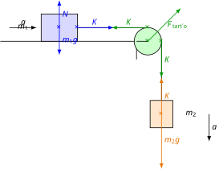

A második törvény mérése
Kísérlet
Ebben a kísérletben a kicsiny súly gyorsítja a teljes tömeget, ahogy nemsokára ezt az elmélettel is megmagyarázzuk. A gyorsító erő egyenesen arányos a gyorsulással, amit egy gyorsulásérzékelővel mérünk, mely Bluetooth segítségével össze van kapcsolva a telefonnal. A gyorsító erő egyenesen arányos a gyorsulással, ahogyan azt Newton második törvénye alapján tudjuk. Az arányossági tényező az össztömeg. Mi arra fogunk koncentrálni, hogy megmutassuk: itt valóban csak a kicsiny súly a gyorsító erő, mely a teljes össztömeget gyorsítja.
Legyen a kocsi tömege, mely a vízszintes asztallapon mozog, az tömeg, míg a függőlegesen lefelé gyorsuló tömeg . A két tömeget egy csigán keresztül egy fonal köti össze. A fonal nyújthatatlan és elhanyagolható tömegű, akárcsak a csiga. A súrlódás és a légellenállás is elhanyagolható. Számsítsuk ki a rendszer gyorsulását és a fonalban ébredő erőt is!

Ezek az egyenletek Newton második törvényét fejezik ki az első és a második testre. Ha az első egyenletből értékét beírjuk a második egyenletbe, akkor ki tudjuk fejezni az gyorsulást.
A gyorsulás az súly és az össztömeg hányadosa, tehát valóban a kis lefelé mozgó súly gyorsítja a rendszer teljes össztömegét.
Példa
A videóból látszik, hogy lefelé gyorsuló tömeg gyorsulással mozog. Mekkora a rendszer össztömege? Mennyi a kocsi tömege? Mekkora a fonalerő? (A számítás során használjuk a értéket, a videóban látható kerekített helyett.)
Feladatok
Mekkora a példában a rendszer mechanikai energiája, ha a gyorsító tömeg , és a rendszer -on át gyorsul? Mitől függ ez a mechanikai energia? Válasszuk a helyzeti energia nullaszintjét az első test magasságában, és kezdetben a második test legyen magasságban!
Számítsuk ki a testek elmozdulásait alatt! Számítsuk ki a tömegközéppont koordinátáit a kezdeti és a végső pillanatban is! Mekkora a tömegközéppont gyorsulásának és komponense? Mutassuk meg, hogy ugyanezt kapjuk, ha a tömegközéppont-tétel alapján számolunk!
Legyen az asztallap síkja -os szögben a vízszintessel úgy, hogy a rajta lévő -os test emelkedjen a másik test süllyedésekor. Milyen nagy a rendszer gyorsulása, ha az egyensúlyi tömegnél -mal nagyobb a függőlegesen mozgó test tömege? Mekkora a kötélben ébredő erő? A rendszer ideális, veszteségmentes.
Egy asztallapon vízszintesen mozoghat egy tömegű test. Az asztal két végén egy-egy elhanyagolható tömegű csiga van, melyeken átvetett fonalak a testet egy -os és egy -os testtel kötik össze. Ezek a testek függőlegesen mozognak, és a fonalak elhanyagolható tömegűek és nyújthatatlanok. A súrlódás elhanyagolható. Mekkora a rendszer gyorsulása? Mekkora erők ébrednek a fonalakban?
Mekkorák a 4. feladatbeli rendszer tömegközéppontjának gyorsuláskomponensei, ha a testek álló helyzetből -on át gyorsulnak? Számítsuk ki a tömegközéppont elmozdulásának komponenseit, és ez alapján a gyorsuláskomponenseket is! Mutassuk ki, hogy érvényes a tömegközéppont tétele, mert az ez alapján kiszámított gyorsuláskomponensek megegyeznek a tömegközéppont előző úton kiszámított gyorsuláskomponenseivel!